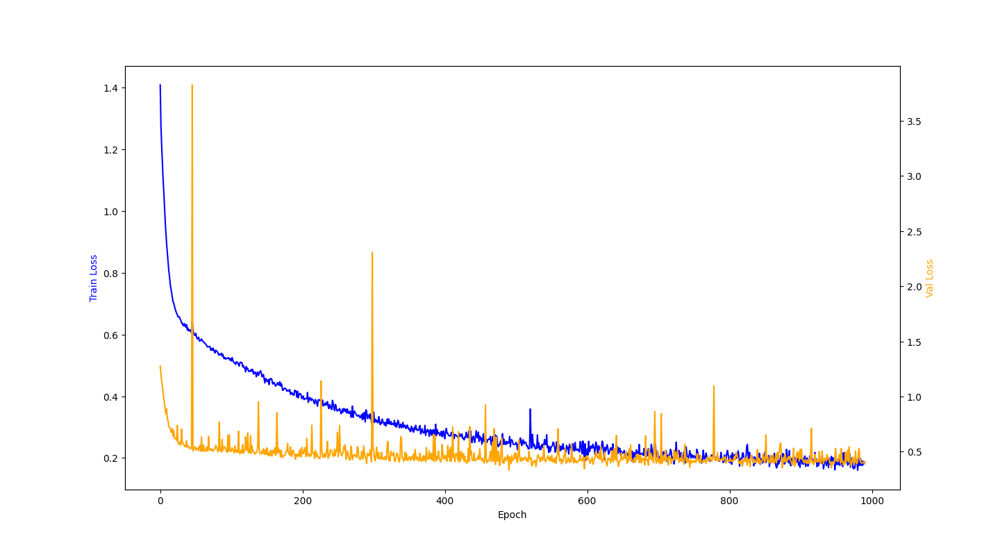

Neural Network Inverted Pendulum Controller
MLP trained from scratch to swing up and balance an inverted pendulum via imitation of a classical expert.
Overview
The goal of this project is to train a single multilayer perceptron (MLP) to swing up and balance an inverted pendulum on a cart, starting from the stable hanging position. The entire implementation is written from scratch in Python and NumPy.
The approach is supervised imitation learning. A classical two-phase expert controller: an energy shaping swing-up pump followed by a linear-quadratic regulator (LQR) to catch and balance the pendulum, generates a dataset of state-action pairs, and the MLP is trained by ordinary regression to reproduce the expert's behaviour.
Dynamics
A cart of mass $M$ sits on a frictionless track at position $x$, with a pendulum of mass $m$ and length $l$ pinned to it. The angle $\theta$ is measured from the upward vertical, so $\theta = 0$ is the unstable upright equilibrium and $\theta = \pi$ is the stable hanging position. The Euler-Lagrange equations govern the full coupled system; the simulator treats the network output as the cart acceleration $\ddot{x}$ directly and integrates
$$ \ddot{\theta} = \frac{g}{l}\sin\theta - \frac{\ddot{x}}{l}\cos\theta $$using forward Euler at fixed timestep $dt = 0.01$, with $g = 10$ and $l = 1$. Angles are kept in $(-\pi, \pi]$ relative to upright via the wrapping map $\operatorname{wrap}(\theta) = ((\theta + \pi) \bmod 2\pi) - \pi$.
Expert controller
The expert controller was implemented in data_gen.py, the details of each control phase are outlined below:
Energy-shaping swing-up
The mechanical energy of the pendulum is $E = \tfrac{1}{2}l^2\dot\theta^2 + gl\cos\theta$, with target energy $E_{\text{top}} = gl$ at the upright equilibrium. The swing-up controller either injects or subtracts energy from the pendulum by setting the carts acceleration:
$$ \ddot{x} = k_E(E - E_{\text{top}})\operatorname{sign}(\dot\theta\cos\theta) - k_x x - k_{\dot{x}}\dot{x}, $$where the first term is a proportional energy pump and the $k_x$, $k_{\dot{x}}$ terms provide cart-centering to prevent runaway drift. The tuned gains are $k_E = 0.15$, $k_x = 0.2$, $k_{\dot{x}} = 0.3$.
LQR balance
Near $\theta = 0$ the dynamics are approximately linear. Writing the state as $\boldsymbol{s} = (x,\,\dot{x},\,\theta,\,\dot\theta)^\top$, the linearisation gives $\dot{\boldsymbol{s}} = A\boldsymbol{s} + Bu$. The linear-quadratic regulator minimises the cost
$$ J = \int_0^\infty \!\bigl(\boldsymbol{s}^\top Q\,\boldsymbol{s} + u^\top R\,u\bigr)\,dt $$with $Q = \operatorname{diag}(1, 1, 10, 1)$ and $R = 0.1$. Here the diagonal entries of $Q$ encode how strongly we wish to control the variables $(x,\,\dot{x},\,\theta,\,\dot\theta)$, while $R$ controls the magnitude of the action taken by the LQR, with a small $R$ allowing for larger actions. The optimal gain $K$ is obtained once by solving the algebraic Riccati equation, giving the LQR action $\ddot{x} = -K\boldsymbol{s}$. The expert switches from swing-up to LQR when $|\operatorname{wrap}(\theta)| < 0.4$ and $|\dot\theta| < 3$.
Network and training
The network is a two-hidden-layer MLP with $\tanh$ activations and a linear output:
$$ \begin{aligned} Z_1 &= W_1\boldsymbol{s} + b_1, &\quad A_1 &= \tanh(Z_1), \\ Z_2 &= W_2 A_1 + b_2, &\quad A_2 &= \tanh(Z_2), \\ u &= w_3^\top A_2 + b_3, \end{aligned} $$with hidden width $h = 36$ and weights initialised from $\mathcal{N}(0, 1/n_{\text{in}})$. The training loss is the mean squared error over a mini-batch:
$$ \mathcal{L} = \frac{1}{B}\sum_{i=1}^{B}\bigl(u(\boldsymbol{s}_i;\,W) - u_i^*\bigr)^2. $$Gradients are computed by two-layer backpropagation and weights are updated by mini-batch SGD. The data is split approximately 85/15 into training and validation sets; training stops when the validation loss plateaus.
The dataset is generated by rolling out the expert from many randomised initial conditions. Exploration noise is added to the expert's actions so that trajectories drift off the ideal path, forcing the expert to demonstrate recovery from states the network will encounter during deployment, this addresses distribution shift. Finally, to prevent the data being overloaded with states near the inverted position, only 40% of those states are kept.
Implementation
The network and backpropagation are both implemented from scratch. forward
computes activations and caches them for the backward pass;
backward propagates the MSE gradient through each layer using the
identity $\tanh'(z) = 1 - \tanh^2(z)$, which is recovered cheaply from the cached
activations without storing pre-activations.
def forward(X):
Z1 = X @ W1.T + b1
A1 = np.tanh(Z1)
Z2 = A1 @ W2.T + b2
A2 = np.tanh(Z2)
P = A2 @ w3 + b3
return P, (X, A1, A2)
def backward(cache, P, Y):
X, A1, A2 = cache
B = len(Y)
dP = 2 * (P - Y) / B
gw3 = A2.T @ dP
gb3 = dP.sum()
dA2 = np.outer(dP, w3)
dZ2 = dA2 * (1 - A2 ** 2)
gW2 = dZ2.T @ A1
gb2 = dZ2.sum(axis=0)
dA1 = dZ2 @ W2
dZ1 = dA1 * (1 - A1 ** 2)
gW1 = dZ1.T @ X
gb1 = dZ1.sum(axis=0)
return gW1, gb1, gW2, gb2, gw3, gb3Results
The videos below show the controller at epoch 0 (random weights) and at epoch 1000 (fully trained). At epoch 0 the cart makes no meaningful attempt to invert the pendulum; by epoch 1000 the network successfully swings the pole up from the hanging position and holds it balanced indefinitely.
The weight diagrams below visualise the magnitude of each weight matrix at four points during training. At epoch 0 the weights are random and roughly evenly distributed, by epoch 1000 clear structure has emerged as the hidden layers develop. We can see by the end of training that the network has placed the most importance on $\theta$, which is to be expected giving the nature of the problem.


The above diagrams were generated using visualize_network.py, where orange connections represent positive weights and blue represents negative weights. The thickness and opacity of the connections is proportional to the magnitude of each weight.
The training curve shows the MSE on both the training and validation sets across epochs. Both losses decrease steadily and track each other closely, indicating that the network generalises to unseen states rather than memorising the training data.
